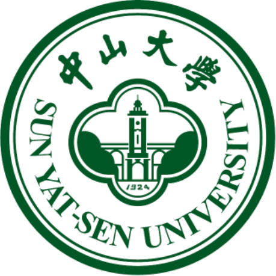
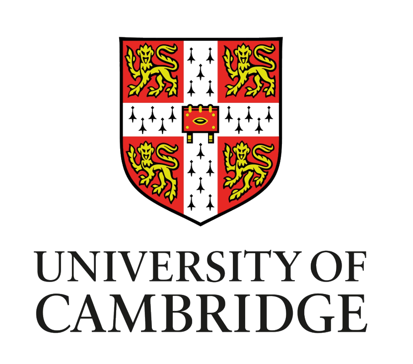
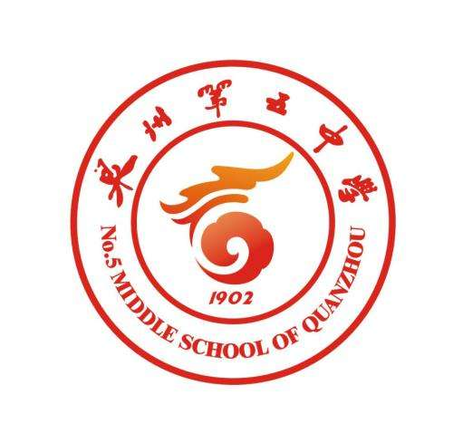

曾昱升 (Yusheng Zeng)
 |
2019级本科生 |
关于我
我是四川大学 电气工程学院 自动化专业2019级本科生， 目前在孟锦豪副研究员的指导下进行科研， 预计将于2023年9月前往 中山大学 智能工程学院 攻读硕士学位， 师从杨芳芳副教授。
我的研究兴趣主要包括: 锂电池健康状态估计，信息物理系统虚假数据注入，电力系统规划优化 等。
学术论文
计及多源传感器数据不确定性的锂电池健康状态估计方法
曾昱升, 孟锦豪, 肖迁, 刘平
电工技术学报. 在投, [EI期刊]
发明专利
一种基于二次差分温度特征的锂电池健康状态估计方法
曾昱升，孟锦豪，彭纪昌，刘平
国家发明专利, 公开号: CN114297904B
一种电热传感器互校正的锂电池健康状态估计方法
曾昱升，孟锦豪，彭纪昌，刘平
国家发明专利, 公开号: CN114330150B
其他项目
“全自动智能护理床椅”(No. 20220554L)
参与人; 经费:4千元
省级大学生创新训练项目
基于深度学习的皮肤病鉴别诊断系统(No. 20220594L)
负责人; 经费:2千元
校级大学生创新训练项目
教育经历
|  | 硕士 中山大学 (2023.9 ~ 2026.7)
|
|
|
本科 四川大学 (2018.9 ~ 2023.7)
|
|  | 暑校 剑桥大学 (2019.7 ~ 2019.8)
|
|  | 高中 福建省泉州第五中学 (2015.9 ~ 2018.7)
|